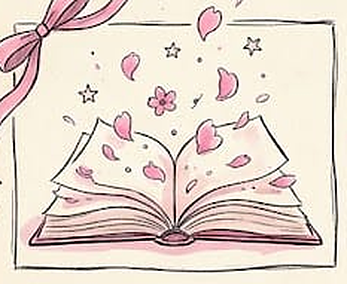
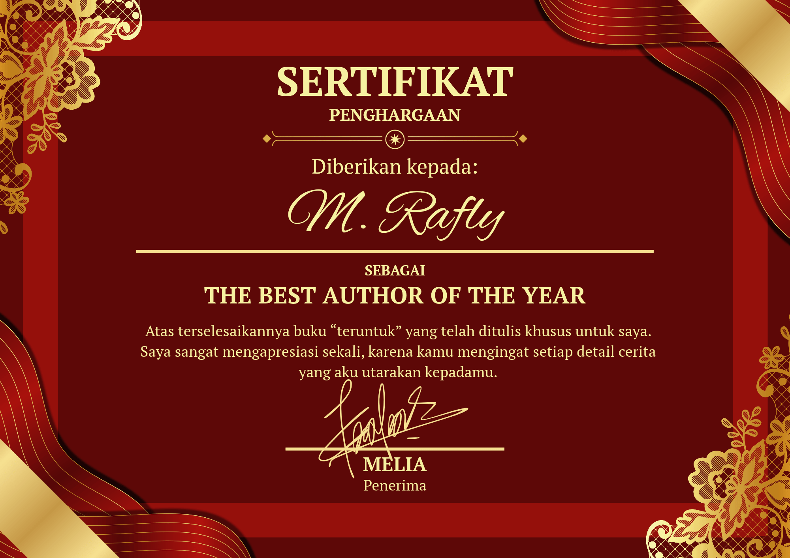
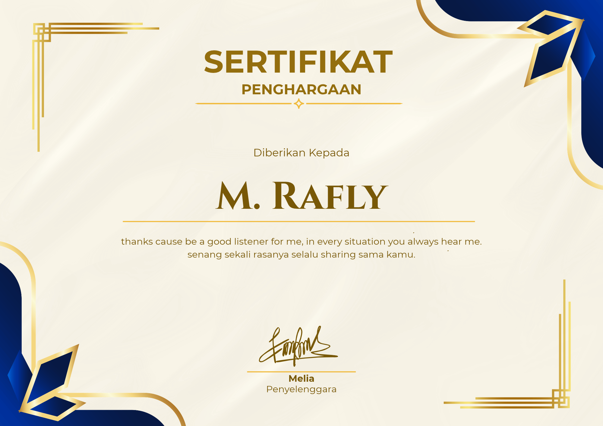
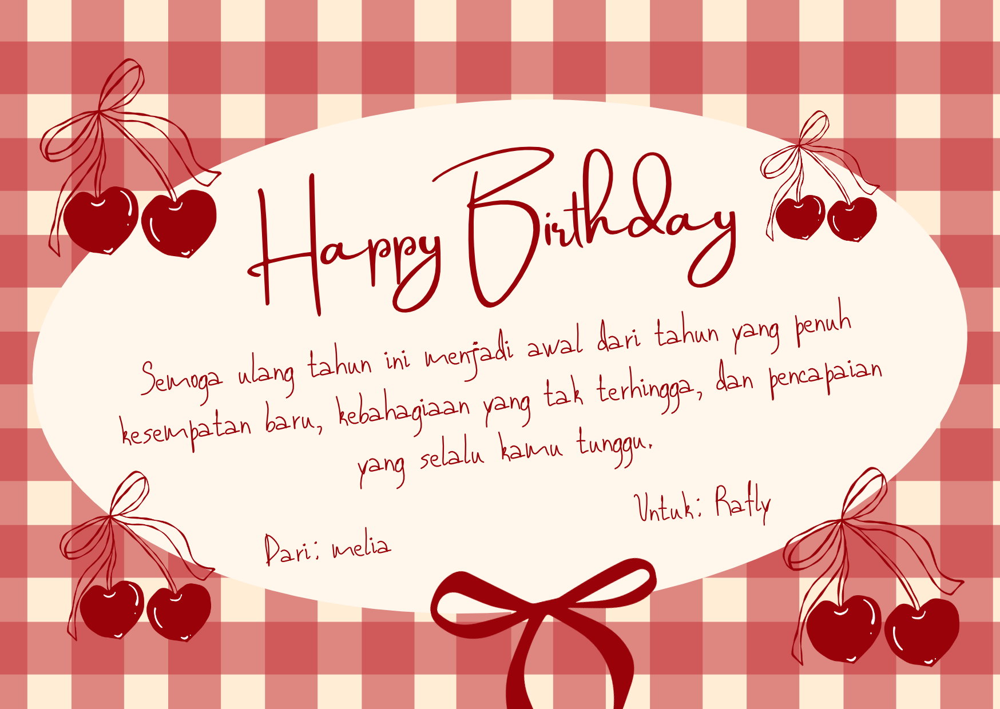
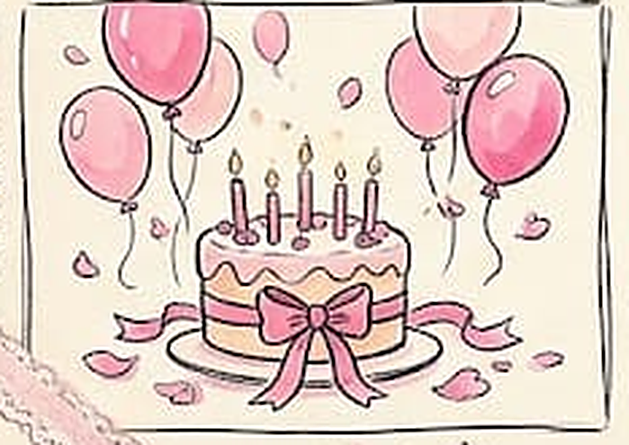

Pestapora Hadirmu
Kamu membuatkan aku satu album penuh. Ini balasanku: satu sudut kecil di internet, yang isinya kamu.

“Aku senang (pernah) mengenal kamu.”
Gulir ke bawah pelan-pelan. Setiap lembar di bawah ini adalah potongan cerita kita, ditempel satu-satu seperti di buku sketsa.
Cerita Kita, Per Lembar
Tidak semua cerita dimulai dengan cara yang megah. Cerita kita dimulai dari sebuah taruhan.

Kalah Taruhan, Menang Obrolan
Kita pertama kali benar-benar mengobrol karena kamu kalah taruhan, dan hukumannya adalah bicara denganku. Dari situ kita main catur. Kamu yang awalnya belajar, lama-lama justru melewatiku.

Uno yang Sengaja Dilama-lamain
Kita main Uno sambil teleponan berjam-jam. Jujur saja, aku sering menahan kartu terakhirku supaya teleponnya tidak cepat selesai. Kamu cerita apa saja: nilai semester, ayahmu yang santai, sampai dipanggil ibumu untuk mandi di tengah telepon.

Lembar yang Sempat Kosong
Ada masa kita membeku. Tidak ada pertengkaran besar, tidak ada perpisahan yang jelas. Kamu berhenti bercerita, dan kita hilang kontak begitu saja. Lembar ini memang kosong cukup lama, dan itu salahku. Untungnya pitanya tidak pernah benar-benar putus.

Buku yang Akhirnya Dibaca
Lewat anonymous chat, kita terhubung lagi. Aku memberimu buku yang kutulis dalam satu malam, “Sebelum Semua Teruntuk”, dan kamu membacanya. Setelah itu kita dekat lagi, bahkan kamu sempat menyamar waktu mengobrol denganku. Itu lucu sekali.

Lalu Kamu Membuat Album
Di ulang tahunku yang ke-21, kamu memberiku “Pestapora Hadirmu”: enam lagu dan puisi dengan suaramu sendiri, dua sertifikat, dan sebuah kartu. Lembar berikutnya adalah album itu, silakan diputar.
Albumnya, Diputar di Sini
Enam lagu dari Melia D. Pasha. Tekan putar, dan biarkan halamannya yang menemani.
Panggung Kecil untuk Lagu Nomor Lima
Di lagumu, aku ini Batman: memikul banyak hal tanpa banyak cerita. Jadi kubuatkan satu sudut malam di halaman ini, lengkap dengan kelelawar yang lewat dan lampu sorot yang menyapu. Kekuatan si tokoh berjubah itu, kata lagumu, adalah memilih tetap berjalan meski lelah.
Catatan kecil: lagu nomor empat ditemani si kucing penjelajah, dan lagu nomor dua ditemani buku besar. Potongannya ada di daftar lagu, seperti stiker yang ditempel di pinggir halaman.
Sajak Perayaan

Hari ini semesta membuka halaman baru kisahku.
Begitu banyak luka yang kusembunyikan di balik senyum.
Semoga di halaman-halaman berikutnya hidup lebih ramah,
yang pergi menemukan jalan untuk tumbuh kembali,
yang kuperjuangkan menemukan rumahnya,
dan yang tulus kulepaskan berhenti menjadi luka.
Itu penggalan puisi ulang tahun yang kamu bacakan untukku. Dengarkan versi suaramu sendiri lewat lagu nomor enam di pemutar album.
Yang Kamu Berikan, Kusimpan Semua
Dua sertifikat dan satu kartu. Bagimu mungkin ini hal kecil. Bagiku, ini bukti bahwa ada orang yang benar-benar mendengarkan.




Surat Kecil untuk Melia
Melia,
Makasih ya, buat albumnya. Enam lagu, satu puisi, dua sertifikat, dan satu kartu. Kamu selalu bilang itu bukan apa-apa, tapi kamu merekam suaramu sendiri untukku. Itu bukan hal kecil.
Aku tidak bisa membuatkanmu album balasan. Yang bisa kubuat cuma ini: satu halaman kecil di internet, isinya cerita kita, lagumu diputar lagi, dan puisimu kutempel di tempat paling tenang.
Maaf untuk lembar yang sempat kosong itu. Terima kasih sudah mau menyambung pitanya lagi.
Semoga halaman-halaman berikutnya ramah ke kamu juga. Kamu juga puisi yang tidak pernah selesai ditulis semesta.